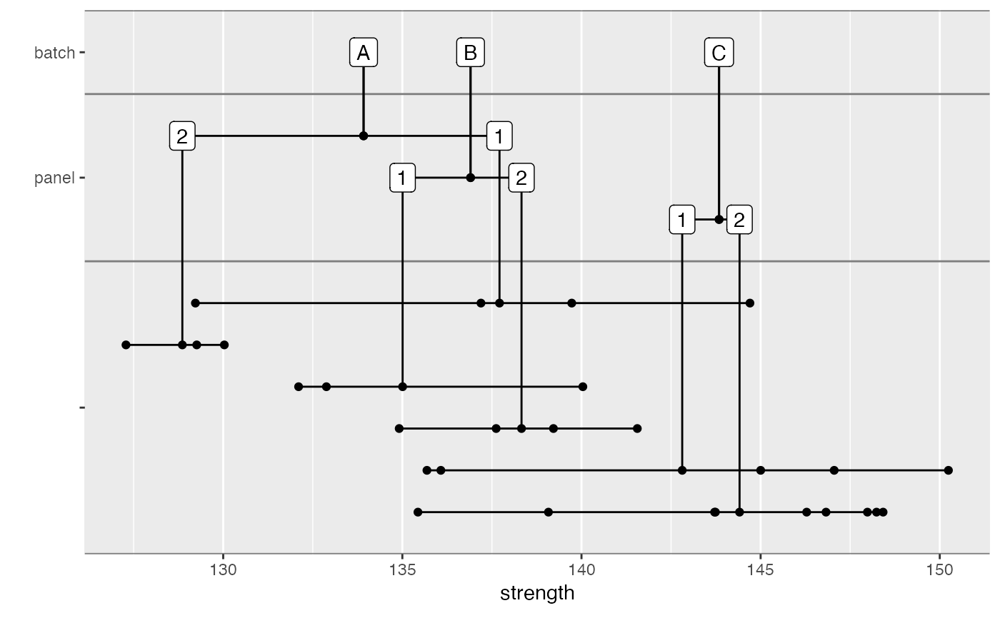
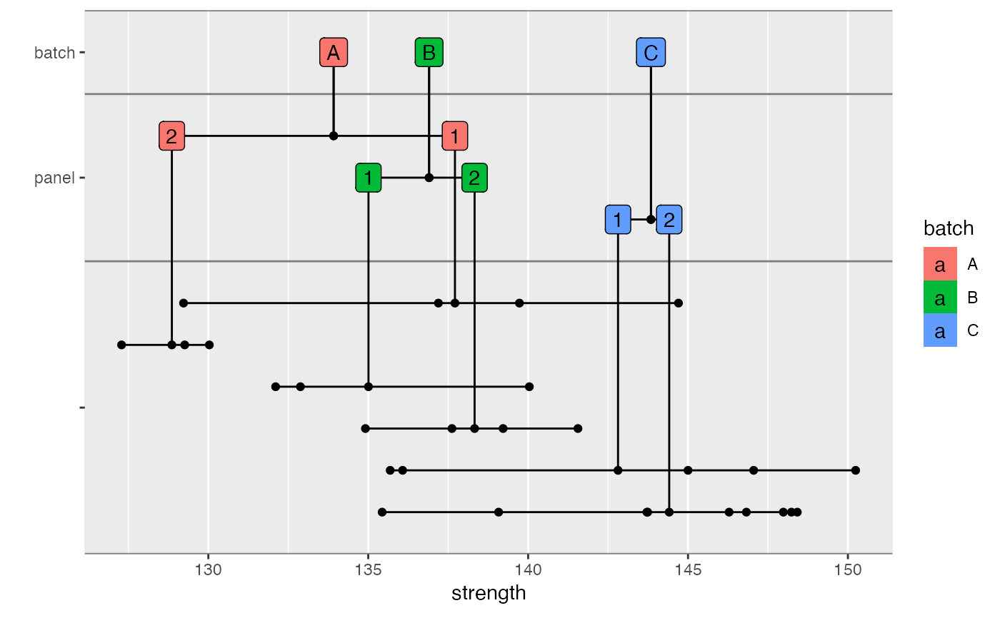

Creates a plot showing the breakdown of variation within a sample. This function uses ggplot2 internally.
a data.frame or similar object
the variable within dat to plot. Most often this would be a
strength or modulus variable.
a vector of variables to group the data by
a function for computing the central location for each group. This is normally "mean" but could be "median" or another function.
extra options. See Details.
the vertical gap between grouping variables
the color of the lines between grouping variables.
Or NULL to omit these lines.
arguments to pass to ggplot2::geom_point when plotting individual data points.
arguments to pass to ggplot2::geom_segment when plotting the horizontal lines between data points.
arguments to pass to ggplot2::geom_segment when plotting vertical lines
arguments to pass to ggplot2::geom_segment when plotting horizontal lines connecting levels in groups
arguments to pass to ggplot2::geom_label when plotting labels
arguments to pass to ggplot2::geom_point when plotting the connection between the vertical lines and the horizontal lines connecting levels in groups
Extra options can be included to control aesthetic options. The following options are supported. Any (or all) can be set to a single variable in the data set.
color: Controls the color of the data points.
fill: Controls the fill color of the labels. When a particular label
is associated with data points with more than one level of the supplied
variable, the fill is omitted.
library(dplyr)
carbon.fabric.2 %>%
filter(test == "WT" & condition == "RTD") %>%
nested_data_plot(strength,
groups = c(batch, panel))

# Labels can be filled too
carbon.fabric.2 %>%
filter(test == "WT" & condition == "RTD") %>%
nested_data_plot(strength,
groups = c(batch, panel),
fill = batch)
